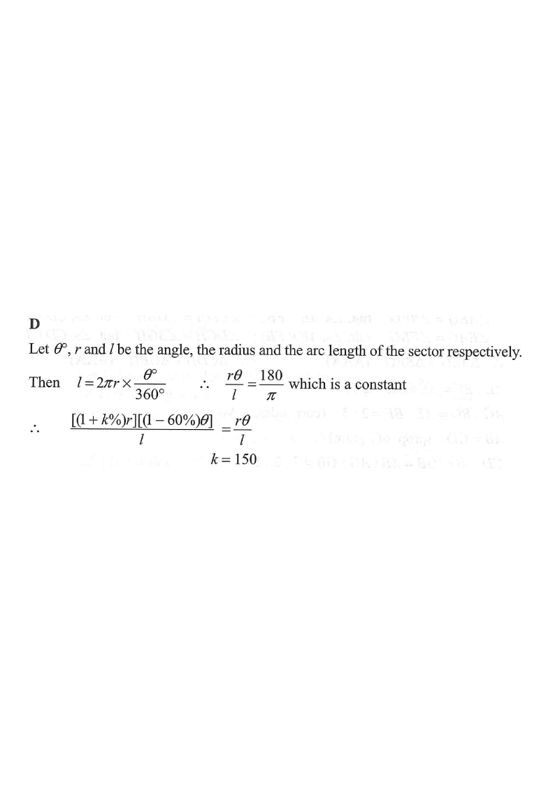

弧度與扇形 · 百分變化

$$l=2\pi r\cdot\frac{\theta}{360}=\frac{\pi r\theta}{180}$$
由於 $\dfrac{\pi}{180}$ 是常數，弧長不變就等價於乘積 $r\theta$ 不變。
角減少 $60\%$：新角 $=0.4\theta$。
半徑增加 $k\%$：新半徑 $=\left(1+\dfrac{k}{100}\right)r$。
$$r\theta=\left(1+\frac{k}{100}\right)r\times0.4\theta$$
兩邊同除以 $r\theta$（$r,\theta\ne0$）：
$$1=0.4\left(1+\frac{k}{100}\right)\quad\Rightarrow\quad1+\frac{k}{100}=2.5\quad\Rightarrow\quad k=150$$
驗算：半徑變 $2.5r$、角變 $0.4\theta$，乘積仍為 $r\theta$ ✓。
選項 A、B 是誤把「角減少 $60\%$」當成「半徑只需增加 $60\%$」；選項 C 則是 $100\times\dfrac{1}{1.5}$ 的倒數錯誤。